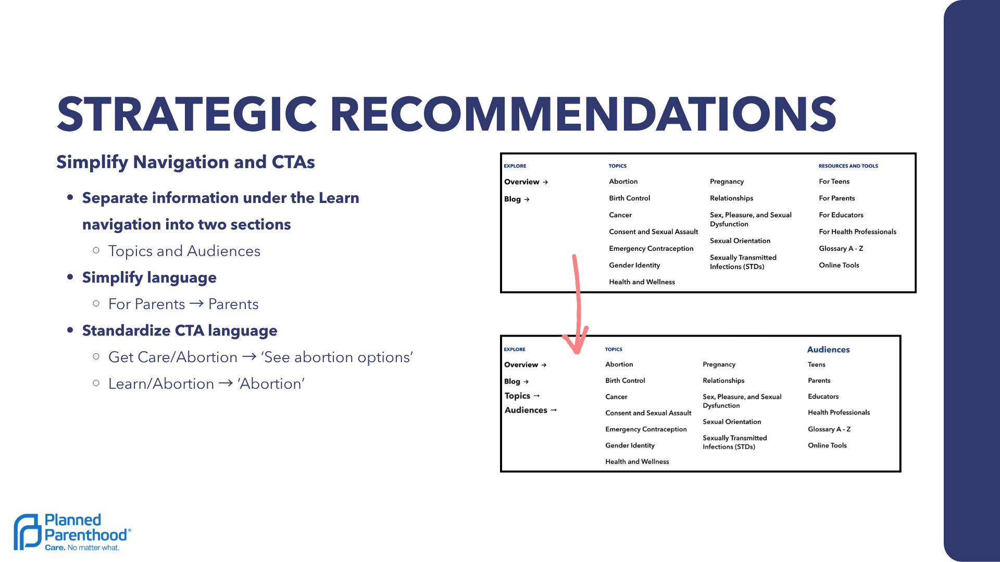
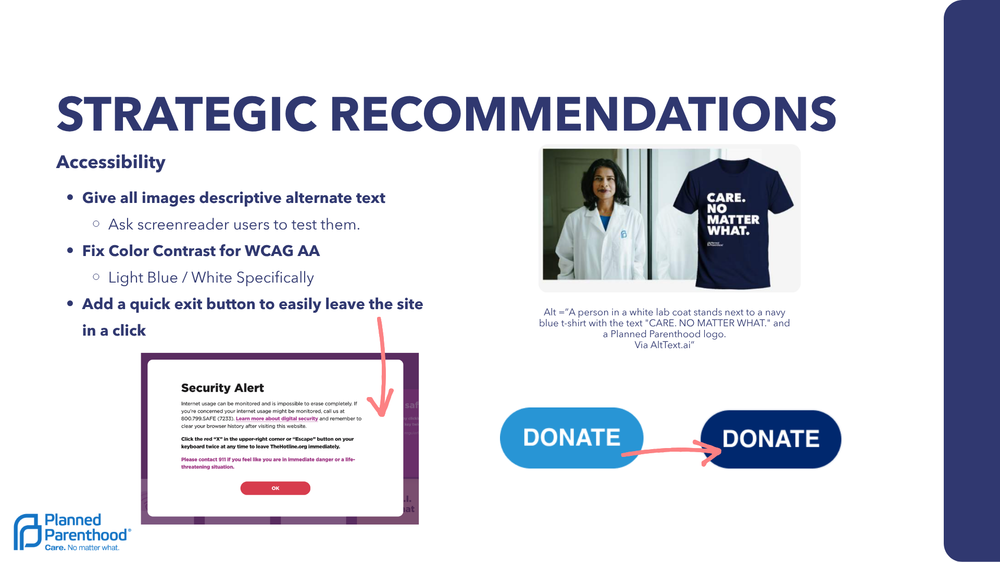
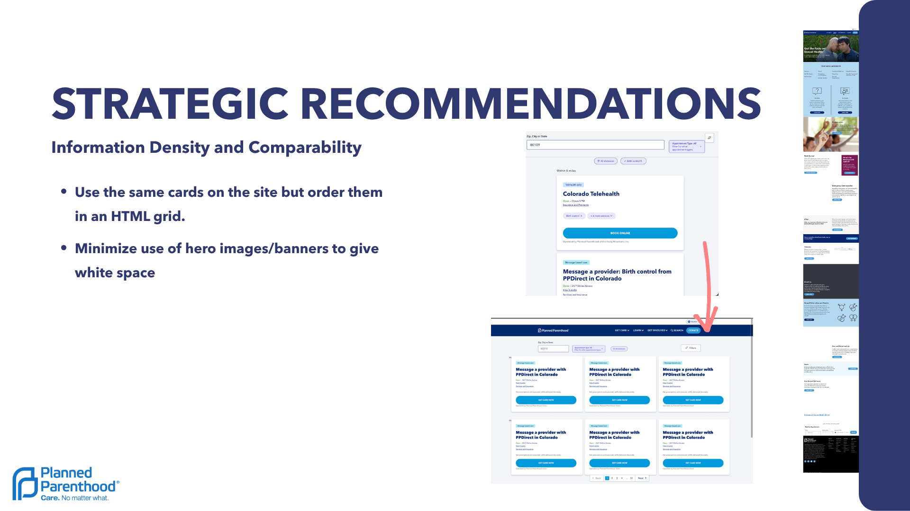

Planned Parenthood
UX Audit.
Role
UX Researcher & Designer
Timeline
4 Weeks
Platform
Web Desktop & Mobile
Methods
WCAG, Heuristics, Card Sorting
The Problem
Planned Parenthood’s platform serves women, parents, and LGBTQ+ individuals who need to quickly find time-sensitive health information and easily schedule appointments. While the site appears professional and trustworthy, users currently experience severe decision friction.
This is caused by disorganized information architecture, an overly tedious third-party booking flow, and critical accessibility barriers that block inclusive navigation.
The Audit & Metrics
Persona Analysis
Evaluated the site through "Lana Rey," a 22-year-old, highly efficient, tech-savvy user.
Insight:
Lana would face frustration due to a lack of visual side-by-side clinic comparisons and a tedious third-party scheduling flow.
Comprehensive Results & Design Solutions
01Streamline Appointment Scheduling
Redesign the Booking UI: Replace the tedious vertical column of appointments with side-by-side comparative layouts or drop-down filters to accelerate decision-making.
Remove Auto-Fill Traps: Disable default search parameters (like "Birth Control") that auto-populate based on browsing history, eliminating user confusion during the booking flow.
Fix Ambiguous Form Elements: Remove confusing buttons (like "Select another provider") and redesign fields like "Annual Wellness exam"—which currently looks like a search bar—into clear, visual lists.
02Simplify Architecture & Standardize CTAs
Restructure the "Learn" Menu: Break the massive "Learn" drop-down into two easily scannable sections: "Topics" (e.g., Abortion, Birth Control) and "Audiences" (e.g., Teens, Parents).
Standardize Action-Oriented CTAs: Ensure button verbs consistently tell the user what will happen next (e.g., updating a vague "Abortion" button to "See abortion options").
Optimize Information Density: Reduce the height of full-screen Hero Images to minimize unnecessary scrolling and bring crucial CTA buttons higher up the page.
03Prioritize Accessibility & User Safety
Implement Descriptive Alt-Text: Provide thorough alternate text for all images and informational card displays so visually impaired users have full context via screen readers.
Fix WCAG AA Color Contrast: Update the color palette to fix contrast issues, specifically targeting light blue text on white backgrounds.
Add a "Quick Exit" Safety Button: Implement a highly visible "Escape" button (similar to those on domestic violence support sites) allowing users in monitored or unsafe situations to leave the site immediately with one click.
Wireframes & Interface Previews


